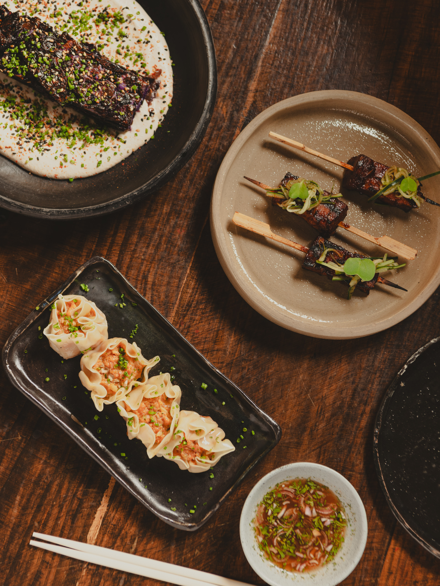
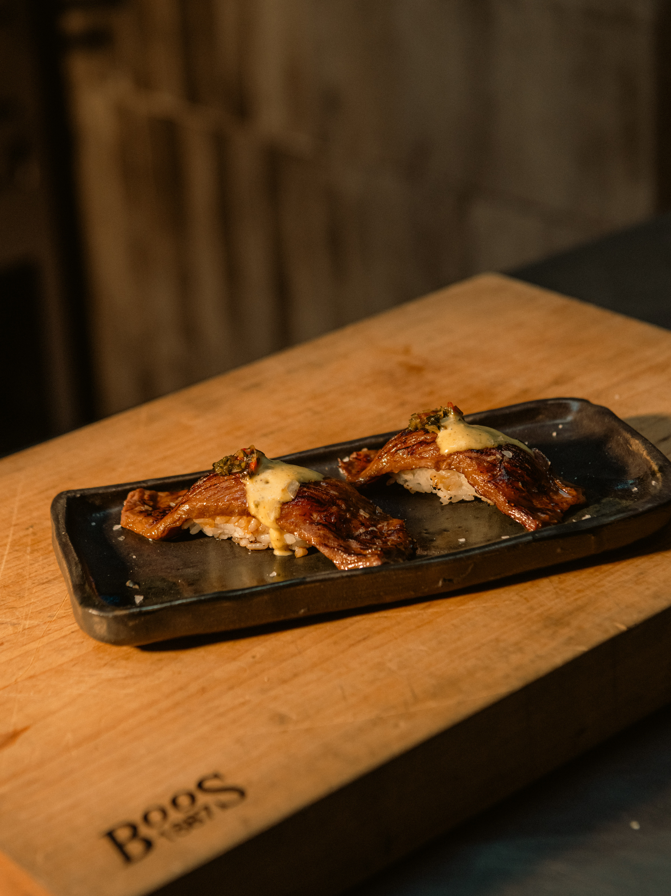
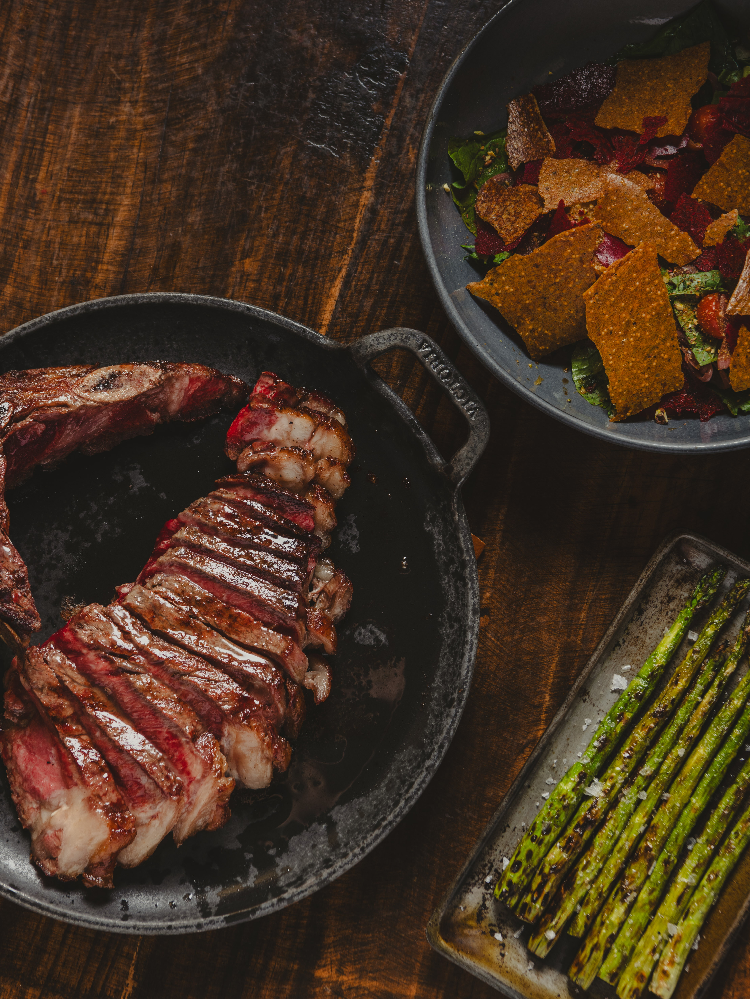

A fuego
Esencia de marca
Un steakhouse premium para amantes de la buena carne, los buenos momentos y la mejor compania.
Producto
El manual deja claro que el producto es protagonista. Por eso el sitio prioriza carne, tecnica, maduracion y trazabilidad.
Fuego
La identidad visual se apoya en luces, sombras, contraste y un rojo encendido que remite al carbon y al calor.
Ambiente
Todo apunta a una sensacion calida y acogedora, pero con porte: cenas, celebraciones, negocios y ocasiones memorables.
La experiencia 345
Honesta, autentica, fuerte y calida.
El brand book define una voz basada en cuatro pilares: carnes y cava de maduracion, fuego, ambiente y servicio. Esta home ya esta organizada con esa misma logica y usando imagenes reales para que se sienta mas propia.
Tambien quitamos cualquier guiño a gift cards y mantenemos el foco en lo que hoy si existe: reservas externas, captura de leads y una narrativa de marca mas premium.
Galeria real
Las imagenes del restaurante ya entran a la experiencia del sitio.



